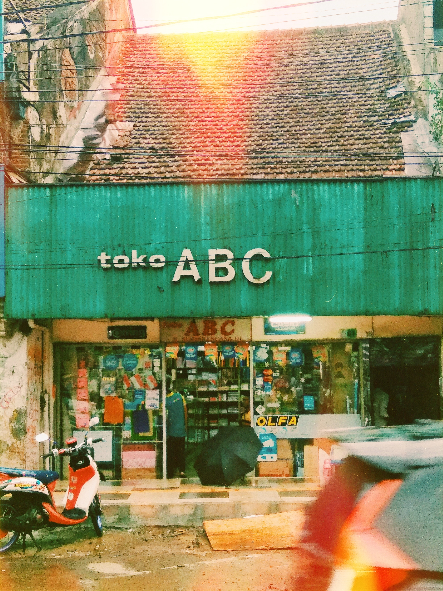

VOLIM HTML!
HTML mi je draži od hrvatskoga jezika!
HTML volim više od braće i sestara!
- Osnove izrade web stranica
- Programiranje web korisničkog sučelja

Ne!
HTML je kratica za HyperText Markup Language, što znači prezentacijski jezik za izradu web stranica. Hipertekst dokument stvara se pomoću HTML jezika. HTML jezikom oblikuje se sadržaj i stvaraju se hiperveze hipertekst dokumenta. HTML je jednostavan za uporabu i lako se uči, što je jedan od razloga njegove opće prihvaćenosti i popularnosti. Svoju raširenost zahvaljuje jednostavnosti i tome što je od početka bio zamišljen kao besplatan i tako dostupan svima. Prikaz hipertekst dokumenta omogućuje web preglednik. Temeljna zadaća HTML jezika jest uputiti web preglednik kako prikazati hipertekst dokument.
HTML5 donosi brojne nove mogućnosti koje HTML 4.01 i XHTML 1.x nisu imali, kao što je mogućnost reprodukcije videa na stranicama bez korištenja Adobe flasha iil Microsoftovog silverlighta, mogućnost upravljanja pomoću tipkovnice i opcijama za bilo koju vrstu manipulacija, drag and drop, canvas kao i ostali novi elementi.


VOLIM HTML!